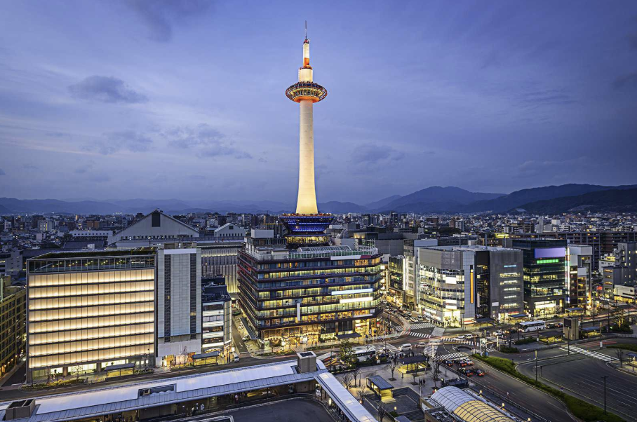
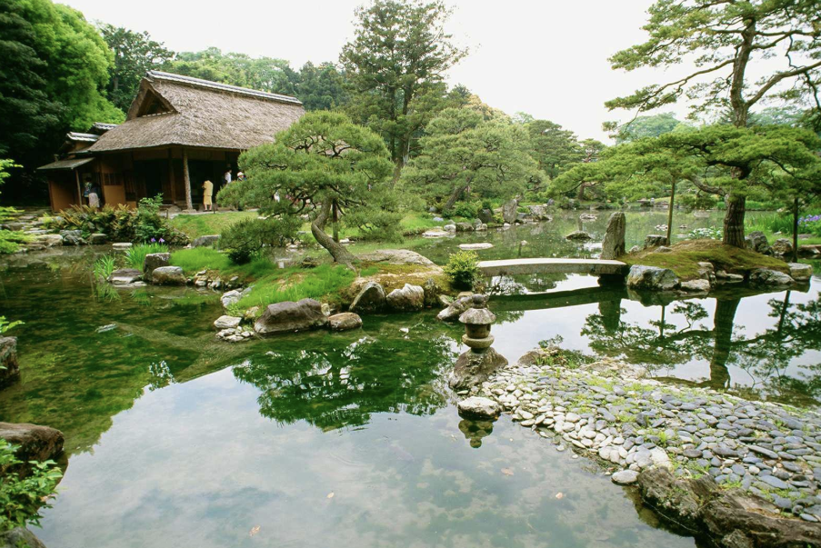
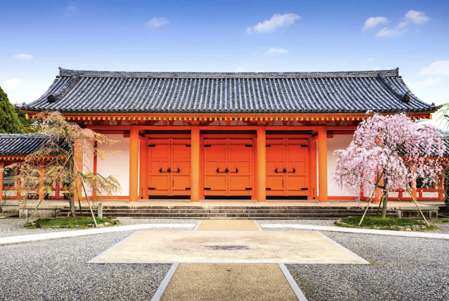
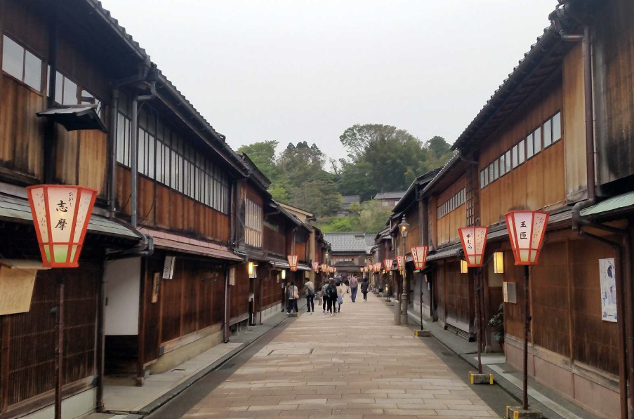
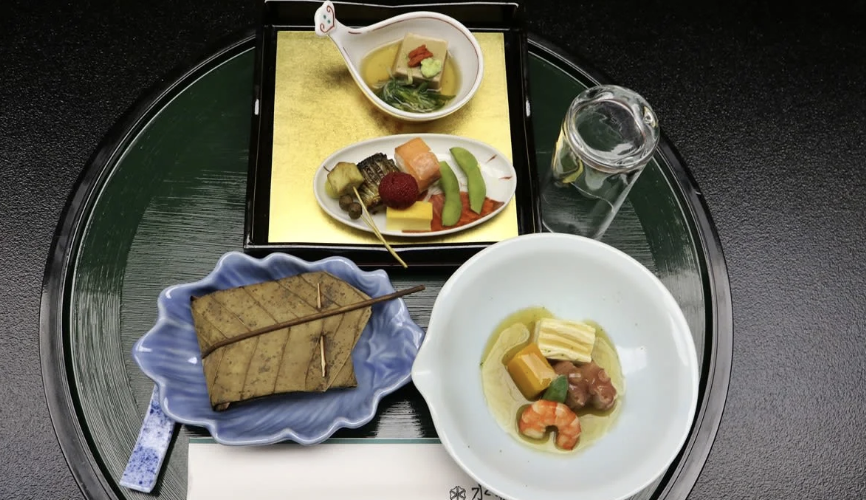
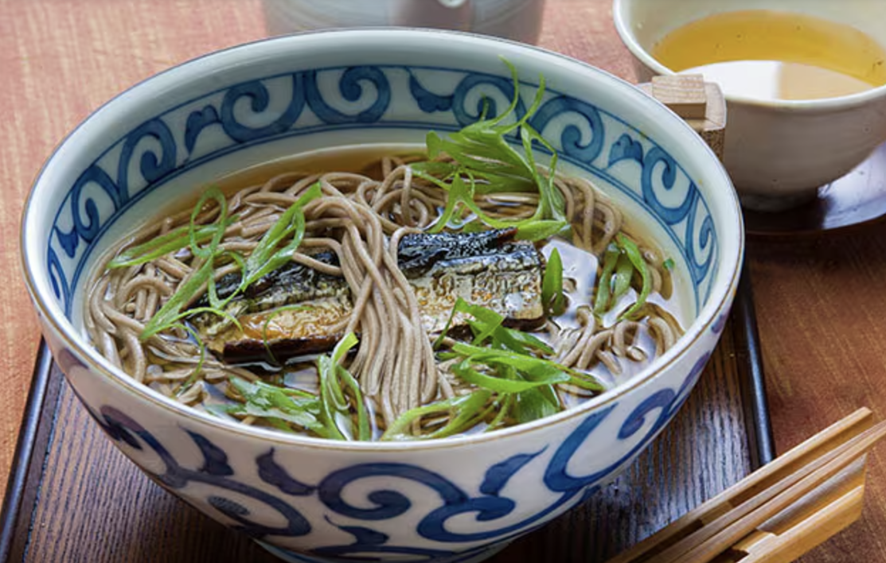
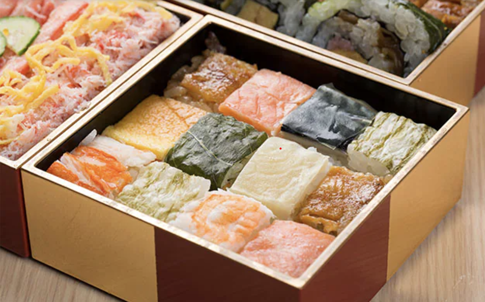

1. 교토는 어떤 곳인가 ?

교토는 794년부터 1000년 넘는 세월 동안 일본의 도읍지였다. 수 차례 전란에 휘말렸지만 굳건히 일본을 지킨 교토는 수도가 옮겨진 이후에도 근대도시로서의 발전을 이룩해왔다. 문화면으로는 천황을 중심으로 번영한 궁정문화가 건축, 공예, 기모노, 요리 등 다양한 분야로 계승되었다. 교토에는 국보, 중요문화제 등 3000개에 가까운 유,무형의 귀중한 문화유산이 있다. 말 그대로 역사의 숨결을 그대로 느낄 수 있는 여행지이다.
2.교토의 기후는 ?

교토는 1년 내내 관광객이 많이 찾는 곳이지만 여름에는 가마솥 더위, 겨울에는 발 밑에서 한기가 올라올 정도로 추위가 매섭다. 쾌적한 여행을 원한다면 봄, 가을이 좋다. 봄에는 벚꽃, 가을에는 단풍이 아름다워 관광에 최적의 시즌이라 할 수 있다. 특히 이번 시즌인 겨울 시즌은 교토 시가지는 적설량이 적은 편이지만 교토 삼림같은 고도가 높은 곳은 기온이 엄청 떨어지기 때문에 여행을 위해 방문한다면 따뜻한 옷은 필수다.
3. 교토에서 꼭 가봐야하는 곳
1. 교토 타워
1964년에 문을 연 교토 타워는 도시 위 131m 높이에 우뚝 서 있다. 맑은 날에는 전망대에서 오사카만까지 볼 수 있다. 교토역 옆에 있기 때문에 접근도 용이하고 옛스러운 분위기 속 현대적인 디자인을 보는 재미도 있는 교토의 랜드마크 교토 타워를 가보는 것을 추천한다.
2. 가츠라리큐
가츠라리큐는 일본에서 가장 큰 보물 중 하나이자 정통 일본식 건물과 정원을 가장 잘 보여주는 별궁이다. 이곳은 원래 달을 감상하기 위해 지어진 곳인데 달을 더 잘 볼 수 있도록 툇마루를 넓혀 세운 단이 특징이다.우리나라의 정원과는 다른 느낌이 들 것이다.
3. 산주산겐도
산주산겐도는 12세기와 13세기에 실물 크기로 제작된 1,001구의 관음보살상이 자리한 법당으로 유명하다. 자비를 베푸는 보살인 관음보살의 모습을 본 따 만든 불상은 모두 편백을 조각해 금을 입힌 것이다. 28개의 불교 신 동상과 사찰을 수호하는 두 개의 수호신상도 당신의 관심을 끌 것이다.
4. 기온 게이샤 지구
'게이샤'는 아마도 일본을 생각할 때 가장 먼저 떠오르는 단어 중 하나일 것이다. 교토는 게이샤의 중심지였지만 상황이 급변하여 현재는 500명도 남지 않았다고 합니다. 하지만 교토에서는 여전히 게이샤와 마이코(예비 게이샤)가 가모가와 강 동쪽의 유서 깊은 동네인 기온을 오가는 모습을 자주 볼수 있다. 옛 일본의 숨결을 느끼고 싶으면 추천한다.
4. 교토의 먹거리 !!
1. 가이세키
눈으로 맛보고 혀로 느끼는 가이세키 요리는 일본식 코스요리를 뜻하는 말이다. 제철 현지 식재료와 예술적 표현을 결합한 이 요리는 에도시대의 연회에서 비롯된다고 전해진다. 교토의 명물답게 옛스럽지만 고급진 코스요리들을 맛 볼수 있는 장점이 있어서 교토의 가이세키 전문점들은 문전성시를 이루며 가이세키 요리가 제공되는 료칸에서 숙박하는 경우도 허다하다.
2. 니신 소바
19세기 탄생한 니신 소바는 신선한 해산물을 구할 수 없는 당시 시대를 고려해 주요 재료를 간장과 설탕에 절인 태평양 청어로 대체했고, 이것이 현대의 니신 소바의 시작점이었다.. 이 요리가 시작된 '마츠바'라는 음식점은 아직까지 그 전통을 유지하며 영업중이기 때문에, 특별한 경험을 위해 꼭 방문해보는걸 추천한다.
3.교즈시
교토는 내륙에 위치해있어 생산과 거리가 멀었다. 그러나 ,생선을 신선하게 유지하는 방법을 알지 못했을때도, 교토 사람들의 생선과 초밥에 대한 의지는 강했고, 교즈시를 만들어냈다. 이 초밥은 위에 올라가는 생선을 소금과 식초로 절였고, 주 생선으로 고등어를 사용한다는 점이 다른 초밥과의 차이점을 보여준다.